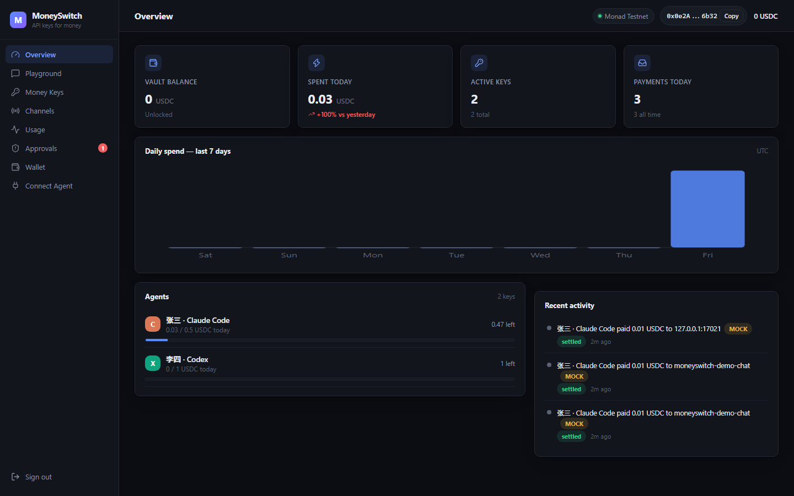

MMoneySwitch
MONAD METROPOLIS · 深圳 HACKER HOUSEAPI keys for money
MoneySwitch
Give your AI an API key for money.
让 AI 像用 API Key 一样花钱——而不是把钱包交给 AI
USDC
Monad
x402
Monad Metropolis 2026 · 深圳 · 2026.09.26
MONEYKEY
mk_live_•••• ••••
MoneySwitch · API keys for money
问题
AI 已经能付钱了，
但没人敢把钱包交给它。
.env · 今天的 x402 客户端示例
PRIVATE_KEY=0x3f9a…
01
x402 已是现实
Agent 按次付 USDC：
HTTP 402 → 签名 → 结算。
02
一次注入，钱包转空
私钥在程序里，一次 Prompt Injection 就够了。
03
规模没有答案
10 个、100 个 Agent 的钱怎么管？
MoneySwitch · Monad Metropolis 深圳
洞察
AI 已经把用户教育好了——
不是钱包，是 API Key。
Key→
Quota→
Used→
Remaining→
Expire→
Revoke→
Logs
NewAPI / OpenRouter 把这套管理 token 的方式变成了常识。
我们把它搬到真钱上。
API KEY · 管 tokensk-••••••••
MONEYKEY · 管 USDCmk_live_••••••••
MoneySwitch · Monad Metropolis 深圳
方案
MoneyKey ≠ 钱，≠ 私钥
钱在金库，AI 只拿一段可控的花钱权限。
01 · 金库
钱始终是 USDC
放在你自己的低余额金库里，私钥从不离开 MoneySwitch。
02 · 授权
AI 只拿 mk_live_…
一段有额度、可撤销的花钱权限，形状和它早已会用的 API Key 一样。
03 · 审计
每一分钱都可见
像 token 用量一样可查、可审计：谁、何时、付给谁、多少。
MoneySwitch · Monad Metropolis 深圳
怎么工作
签名之前，先过策略。
用量$0.01
STEP 01
Agent 调用
带着 MoneyKey 调用付费接口
mk_live_…STEP 02
402 报价
卖方返回 HTTP 402 与价格
HTTP 402STEP 03 · 签名之前
策略引擎
MoneySwitch 逐项检查
STEP 04
签名 + 结算
本地签 USDC 授权，facilitator 在 Monad 结算
EIP-3009STEP 05
返回 + 记账
返回内容，用量实时入账
+$0.01
底层全用现成的：x402 官方 SDKMonadCircle USDC·我们不发币、不造协议。
MoneySwitch · Monad Metropolis 深圳
MMoneySwitch
05 · OpenAI / NewAPI 兼容OpenAI / NewAPI 兼容
MoneyKey 直接当 OpenAI API Key 用
BASE URLapi.openai.com
127.0.0.1:4020/v1
计费按 token 扣虚拟额度
每次调用在 Monad 上真实结算 USDC
零改造接入
openai SDKCherry StudioOpen WebUIClaude Code (MCP)NewAPI 上游渠道
chat.mjs · openai SDK
import OpenAI from "openai";
const client = new OpenAI({
baseURL: "http://127.0.0.1:4020/v1",
apiKey: "mk_live_…",
});
用一句话解释什么是 x402 协议
x402 是一种基于 HTTP 402 的开放链上支付协议……
0.01 USDCtx 0xd3697c…80ad326 tokens已上链核对
真实对话付款 · openai SDK · Monad 测试网
护栏
签名之前先拦，六道防线。
Prompt Injection 让它转 $500？
单笔上限 $0.20，签名都不会发生。
BLOCKED · PER_REQUEST_LIMIT_EXCEEDED
MoneySwitch · Monad Metropolis 深圳
谁在用
四个角色，围着 MoneyKey
MoneySwitch
一个 USDC 资金池
分给每个员工的每个 Agent
Claude Code / Codex 等，按策略花钱
$npx moneyswitch connect --server … --key mk_live_… --apply
MoneySwitch · Monad Metropolis 深圳
Monad 测试网实测 · 截至 2026-09-26
真实数据，全部链上可查。
11
笔已结算
真实 x402 付款
0 笔 mock
0
MON gas
Agent 金库不需要 gas
facilitator 代付
首笔 tx0x1c83a4…4d4d·网络eip155:10143·全部链上可查
数据来源：MoneySwitch 数据库 settled=11 / mock=0 · 链上核对
现场演示
从开 Key 到撤销，六步走完
0:00开一把 MoneyKey
Dashboard：给 Claude 开 $0.50/天 额度
0:20Claude Code 自付报告
付 $0.01，Usage 实时出现链上 tx
0:40Playground 对话
MoneyKey 当 OpenAI Key，每条 $0.01
0:55恶意请求 $5
被拦：PER_REQUEST_LIMIT_EXCEEDED
1:25Revoke
一键撤销：KEY_REVOKED
MoneySwitch Dashboard · Overview
模拟实例 · MOCK
MOCK界面截图来自本地模拟实例，列表中的 MOCK 标记为原样保留，非链上数据
MoneySwitch · Monad Metropolis 深圳
路线图
从今天到企业版。
今天 · v0.1 – v0.3
已上线
- MoneyKey · 策略引擎 · x402 · MCP · Dashboard
- OpenAI / NewAPI 兼容网关 · 渠道 · Playground
- 员工视图 · 一键桌面接入 CLI
v0.4
v0.4
按 token 计价
- x402 upto 按量计费
- MetaMask / OKX 钱包驱动
- 一键给本机 Agent 配 Key
v0.5
v0.5
企业版
- 多用户 · 部门额度
- 审批流 · 审计
- 一个 USDC 资金池，分给每个 Agent
MoneySwitch · Monad Metropolis 深圳
开源与生态
开源打底，长在现成生态上。
GITHUB
github.com/dongsheng123132/moneyswitch
Apache-2.0接入层：MCP、CLI、适配器、卖方示例
嵌进你自己的进程，放心用
AGPL-3.0服务端：Server、Dashboard、核心包
托管分叉的改进回馈社区
三种接入
MCPpaid_fetch
money_status
money_history
OpenAI 兼容/v1/chat/completions
/v1/models
RESTPOST /v1/fetch
任意 x402 收费 URL
站在现成的基础设施上
x402 官方 SDKMonadCircle USDC
不发币、不造协议——只做 AI 和钱之间那一层。
本地复现$ pnpm install && pnpm build && pnpm demo:local离线 mock facilitator + demo 卖方 + Dashboard，不产生真实付款
MoneySwitch · Monad Metropolis 深圳
MoneySwitch
MoneySwitch
Your AI gets pocket money.
You keep the bank account.
给 AI 零花钱，银行卡留在你手里。
github.com/dongsheng123132/moneyswitch
API keys for moneyUSDCMonadx402
Monad Metropolis · 深圳 Hacker House · 2026.09.26